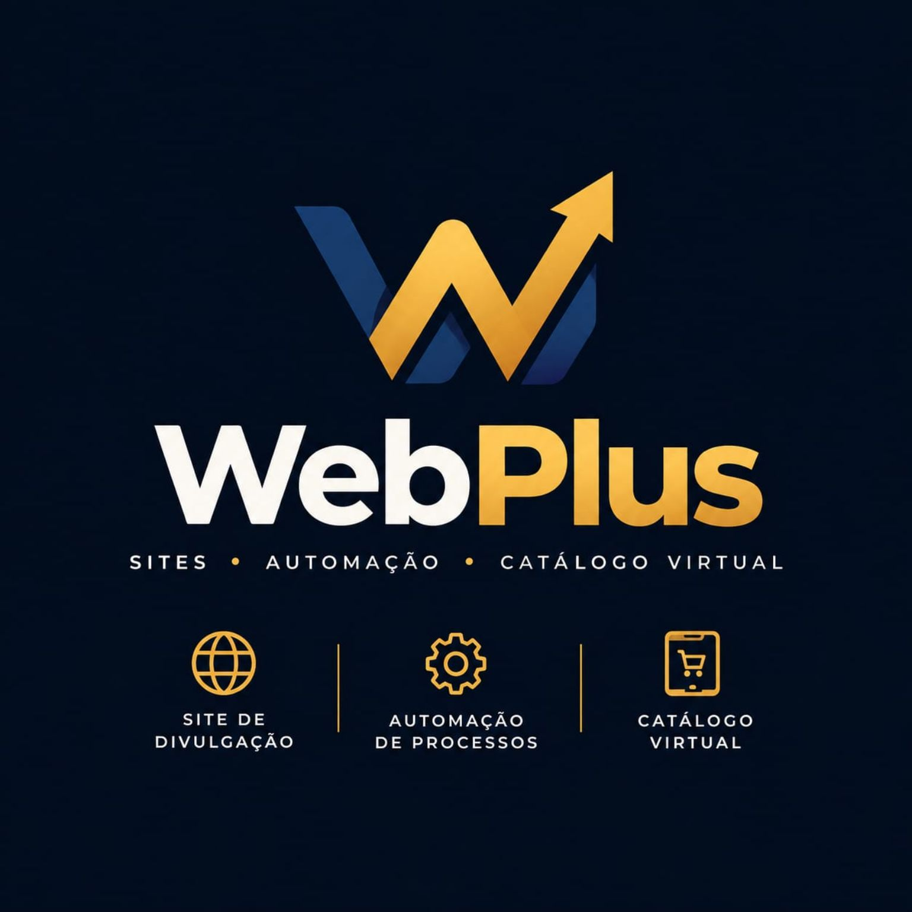

01 / PRESENÇA◉
Sites &
landing pages
Experiências digitais que apresentam seu negócio com clareza e ajudam a transformar interesse em conversa.
ESTRATÉGIA · DESIGN · DESENVOLVIMENTO
ESTÚDIO DIGITAL · MINAS GERAIS
Tiramos boas ideias do papel e colocamos negócios em movimento. Estratégia, desenvolvimento e visão comercial no mesmo time.

Não entregamos apenas uma página no ar. Entendemos a operação, identificamos oportunidades e construímos o digital que faz sentido para ela.
Rhuan lidera desenvolvimento, estratégias e soluções. Tiago conecta negócios, pessoas e oportunidades no comercial. A Web Plus acontece no encontro dessas duas frentes.
Veja como isso se transforma em projeto ↗Presença digital, operação e produtos que acompanham a evolução do seu negócio.
Experiências digitais que apresentam seu negócio com clareza e ajudam a transformar interesse em conversa.
Produtos organizados em uma vitrine simples de navegar e pronta para facilitar a decisão de compra.
Processos mais ágeis para liberar tempo da equipe e dar consistência ao atendimento.
Sistemas feitos para organizar rotinas, conectar informações e resolver demandas específicas.
Plataforma para gestão de academias, alunos e fichas de treino. Produto em desenvolvimento.
Uma operação comercial mais organizada, da prospecção ao acompanhamento de projetos.
Tecnologia e relacionamento trabalhando juntos para fazer cada projeto avançar.
PRÓXIMO PASSO / VAMOS CONVERSAR
Conte para nós onde sua empresa quer chegar. A conversa começa pelo seu desafio.
Chamar a Web Plus no Instagram ↗